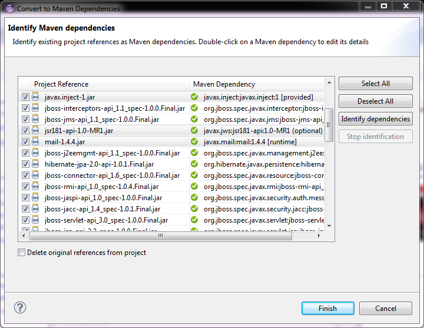

What’s New in 4.1.0.CR1
JBoss Maven Integration
Source lookup improvements
The automatic source lookup feature is now capable of fixing bad source attachements, even for Maven enabled projects. If the attached source doesn’t exist (ex. you wiped out your maven local repository) or doesn’t contain the right source files, it will try to download the proper source. This is especially handy when working on PDE plugins, when PDE automatically attaches the binary jar as a source to itself, even when it doesn’t contain any sources.
See JBIDE-14990 for more details.
What’s New in 4.1.0.Beta1
JBoss Maven Integration
Edit Maven Repositories
Maven Repositories defined in profiles in your settings.xml (Window > Preferences > JBoss Tools > Maven Integration > Configure Maven Repositories…) can now be edited with the "Edit Repository…" button :
image::images/edit-maven-repositories.png Inactive repositories now stand out with an (Inactive) suffix. Click on the "Edit Repository…" button to (re)activate them. See JBIDE-13831 for more details.
What’s New in 4.1.0.Beta1
JBoss Maven Integration
Dependency conversion UI improvement
Non-default scopes and the optional attribute are now shown when converting a project to maven. It is on the dependency identification page where it is directly displayed in the "Maven Dependency" column.
 See JBIDE-14811 for more details.
What’s New in 4.1.0.Alpha2
JBoss Maven Integration
Source lookup for the masses
Maven projects always had an this awesome feature where, clicking on any jar dependency, source would be downloaded automatically for you if needed. We now give you the same level of awesomeness for any kind of (non-maven) project.
The automatic Source Lookup feature is based on Maven. As such, downloaded sources will be stored under your local Maven repository.
Since JDT doesn’t support variables in source attachments (such as M2_REPO), source attachments use absolute (non-portable) paths. It’s ok when the jar is part of a Classpath Library, since the path is stored in your own workspace. But it can become a problem if your jar dependency is listed in your project’s .classpath descriptor, potentially shared with other developers. For this reason, by default, you’ll be warned when a compatible source has been found :

See it in action in this screencast.
If you click on "Remember my decision", your choice will be applied for subsequent source lookups. Your choice can be modified under Window > Preferences > JBoss Tools > Source Lookup :

One advantage of the Source Lookup feature is it’ll check if source attachments are valid. for instance, if the source attachment points to a missing / invalid file, the proper source will be mapped instead. This mitigates the non-portable issue mentioned previously.
Under the hood, the source lookup mechanism is based on various identification strategies :
-
checks if the jar contains maven descriptors under META-INF/maven.
-
checks if the SHA1 checksum of the jar can be found in m2e’s nexus indexes.
-
checks if the SHA1 checksum of the jar can be identified from one of the remote Nexus repository instances defined in Window > Preferences > JBoss Tools > Remote Repositories.
-
checks if the SHA1 checksum of the jar can be identified on http://search.maven.org
See JBIDE-14003 for more details.
What’s New in 4.1.0.Alpha1
JBoss Maven Integration
JPA/JSF/JAX-RS configurators moved to m2e-wtp
The JBoss Tools JPA, JSF and JAX-RS configurators were contributed to the m2e-wtp project, at the Eclipse Foundation. The can be enabled/disabled in the workspace preferences : Window > Preferences > Maven > Java EE Integration :
They’re available as optional features from m2e-wtp’s update sites.
-
http://download.eclipse.org/m2e-wtp/releases/juno/ for Eclipse Indigo (3.7), Juno (3.8, 4.2)
-
http://download.eclipse.org/m2e-wtp/releases/kepler/ for Eclipse Kepler (4.3).
Please be aware m2e-wtp and JBoss Tools JPA, JSF JAX-RS Configurators overlap and can not be installed together.
-
In Eclipse versions prior to Juno SR2, if you try to update your Eclipse installation via "Help > Install New Software…", the optional configurators won’t install because of the conflict with JBoss Tools. If you updated your version of Eclipse to Juno SR2, the m2e-wtp configurators should be seen as suitable replacement for their JBoss Tools counterparts.
-
For all Eclipse versions, doing "Help > Find Updates" everything should update properly.
As always, the safest path to upgrade is to start from a clean Eclipse installation. On a somewhat related note, we ensured all JBoss Tools Maven features are fully compatible with the new m2e 1.3 (Juno SR2) and m2e-wtp 0.17.0.
See JBIDE-13048 for more details.
Kepler/Juno Incompatibilities
For Kepler, the Dali project has changed some of the APIs that are used by the Hibernate configurator. Adapting the Hibernate configurator to these new APIs resulted in incompatibilities with Juno to the extent that it is not anymore possible to support the installation of the Hibernate configurator plugin in Juno. See JBIDE-13365 for more details.